Make Important Things for Important People
> OPERATORS: Bob & Sandy
> DESIGNATION: Husband & Wife Design Team
> ESTABLISHED: 2013 [Initial Boot]
> ACTIVE_HARDWARE: 8+ Multi-Material Units
> DESIGNS_COMPILED: 400+ Files
_
We are an Artisan 3D Print Shop focused on bringing imagination to the physical realm. Our journey began over a decade ago with our very first handmade printer, evolving today into a robust arsenal of multi-material automation.
We specialize in small cute chunky animals, intricate dragons, and satisfying flexi-prints. We design not just for ourselves, but to empower makers across the wasteland with proven, reliable files.
Access our growing catalog of 3D printable files.
Join our active membership! Gain exclusive access to our specialty small cute chunky animals, "Blossom Dragons", and satisfying flexis.
* Active members receive full commercial rights to sell physical prints.
Access VaultDiscover our utility models, functional prints, and featured designs like the "Light Up Eye Gator Dragon" and "Cauldron Purse".
> STATUS: MakerWorld Guardian
> Contributing proven, robust schematics.

We are breathing new life into a historic hardware store in rural Illinois, transforming it into a vibrant community makerspace.
MakerStudio is where the rust of the past meets the innovation of the future. We are rescuing and restoring unique vintage equipment, creating an environment that honors classic craftsmanship while embracing the limitless potential of modern 3D automation.